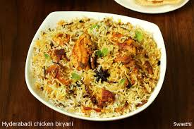

Traditional food of Bangladesh
1:Hilsa/Ilish curry
Hilsa (or ilish) curry is the national dish of Bangladesh, made from the Hilsa fish,
and is one of the most popular traditional Bangladeshi dishes.
The Hilsa fish is marinated in turmeric and chili paste, before slowly frying on a low heat and serving with a mustard gravy and rice. The result is a combination of sweet and sour flavours with an incredible spicy kick.
Aside from being cheap, Hilsa curry is filling, flavoursome, easy to make and widely available due to the amount of Hilsa fish in the region, especially during rainy season. The sheer abundance of the Hilsa fish is why Hilsa Curry is the national dish of Bangladesh.
In Bangladesh it is common to eat every part of the Hilsa fish including the head and the eggs, nothing is wasted and each part even has its own unique delicacies. You can find fish egg dishes or fish head curries that are widely revered throughout the region.
2:Biryani
Biryani, whilst not unique to Bangladesh, is a spicy rice dish made with meat or fish, rice, potatoes and spices.
Hugely popular throughout the Indian subcontinent, Bangladeshi biryani is often considered the best in the world.
In the Bengali region, popular meats include mutton, goat, chicken and beef, but there is such a wide variety of biryani dishes available that you can try.
A true traditional biryani involves different types of cooking and preparation, as marinated meat is layered with rice, potatoes and spices, the dish is jam packed with flavour.
You will often find biryani served at special occasions or celebrations such as weddings, but it is also eaten as a regular meal throughout the weak, such is its popularity.
3:Chingri malai curry/Chingri Macher Malaikari
Changri malai curry is the most famous Bangladesh curry dish based on coconut milk, and is revered throughout the region, including India.
Chingri Malai (or Chingri Macher Malaikari as it is sometimes known), is a delicious creamy, satisfying seafood curry that is prepared by cooking prawns or shrimp in a coconut milk sauce with aromatic spices and served with basmati rice. Coconut milk is a very common ingredient in Bangladeshi cuisine, and this Changri Malai curry is a perfect example of that.
The word Malai suggests the dish was actually brought to the region by Malaysian sailors docking at the Bay of Bengal many years ago, and the use of coconut in curries gives credence to this theory since it is popular in South-East Asian cuisine.
Bangladeshi cooking is famed for its use of seafood and fish in curries, so Chingri malai is definitely a dish to try if you’re ever in the region.
4:Dal/Daal/Dhal
 Dal isn’t unique to Bangladesh but it is so commonly eaten by Bangladeshi’s that it is unequivocally worth mentioning.
Dal refers to lentils, peas and beans that are dried and split, and then often boiled, seasoned and served in various different forms, most commonly as a thick soup.
Naans, rotis, chapatis and other breads traditionally accompany dal, as well as rice or vegetables.
Whilst very simple to prepare, dal is filling and cheap which makes it very popular in poorer regions of Bangladesh, whilst also still being enjoyed by the more wealthy.
Dal is traditionally made by boiling the mix in water with salt and turmeric. Tomatoes, tamarind or other ingredients are sometimes added depending on taste, and then adding spices such as cumin, chili, onion, garlic or mustard seeds, and garnishing before serving.
Dal isn’t unique to Bangladesh but it is so commonly eaten by Bangladeshi’s that it is unequivocally worth mentioning.
Dal refers to lentils, peas and beans that are dried and split, and then often boiled, seasoned and served in various different forms, most commonly as a thick soup.
Naans, rotis, chapatis and other breads traditionally accompany dal, as well as rice or vegetables.
Whilst very simple to prepare, dal is filling and cheap which makes it very popular in poorer regions of Bangladesh, whilst also still being enjoyed by the more wealthy.
Dal is traditionally made by boiling the mix in water with salt and turmeric. Tomatoes, tamarind or other ingredients are sometimes added depending on taste, and then adding spices such as cumin, chili, onion, garlic or mustard seeds, and garnishing before serving.
5:Panta bhat,hlish mac
 Panta bhat is a wonderful example of Bangladeshi food, also enjoyed throughout the Bengal region, and mostly associated with farmers, laborers and the working class. It is a hugely popular Bangladeshi dish.
Panta bhat generally uses leftover rice that is soaked in water overnight to ferment, and then served as breakfast the following morning after being seasoned by salt, chili and onion.
It is a filling and hearty dish, considered to help workers cool down during the hot summer months. You can also drink the water afterwards to get a beautiful tangy kick whilst being refreshed!
Furthermore, it is considered even healthier than fresh rice, with many health benefits due to its nutritional value.
Panta bhat is a wonderful example of Bangladeshi food, also enjoyed throughout the Bengal region, and mostly associated with farmers, laborers and the working class. It is a hugely popular Bangladeshi dish.
Panta bhat generally uses leftover rice that is soaked in water overnight to ferment, and then served as breakfast the following morning after being seasoned by salt, chili and onion.
It is a filling and hearty dish, considered to help workers cool down during the hot summer months. You can also drink the water afterwards to get a beautiful tangy kick whilst being refreshed!
Furthermore, it is considered even healthier than fresh rice, with many health benefits due to its nutritional value.
Traditional food
Watch more Photo of Traditional food
Traditional dress of Bangladesh
Traditional dress for male:
1: Lungi
best known for its comfort. Though now a days its casual dress only. very loose skirt or a sarong.
It hangs from the waist to the ankles and is gathered in front at the waist and twisted into a sort of half knot,
with the ends tucked in so they won’t unravel.
2. Panjabi (with Pajama)
This dress is considered inherited by Bangladeshi in Sultani era
3. Dhuti
This dress is normally wore by Hindu religious persons. From the ancient hindu ruler era this has been into our culture.
Traditional dress for Female:
1:Sari
A sari a long piece of cloth that they wrap around their waist, tucking it in at the waist, then wrapping it around their shoulders.
Usually they also wear a blouse. The top part of the sari can rest around the back of the neck or be pulled over the top of the head,
leaving the face uncovered.
2:Salwar Kameez
The salwar kameez is believed to have originated from the costumes of the Mughals,
who were the Muslim rulers of India. Originally the traditional dress of the Punjab region.
Developed by:Sulave kumar biswas
Next page for developer information